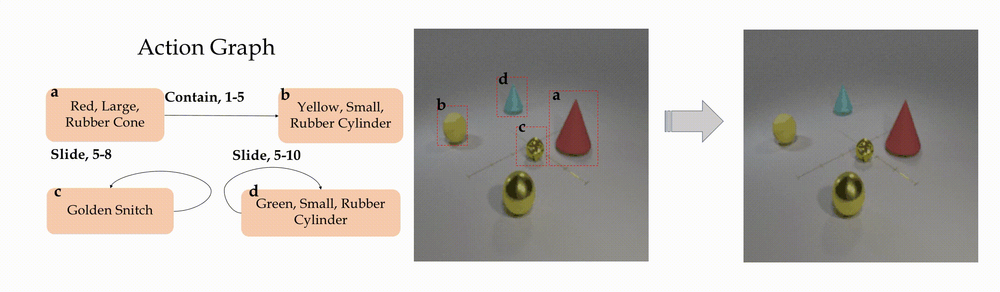
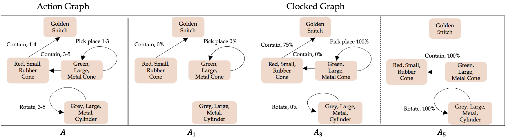
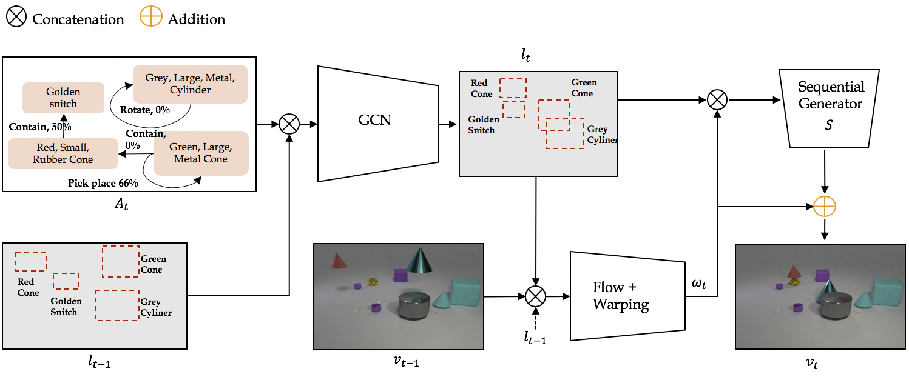
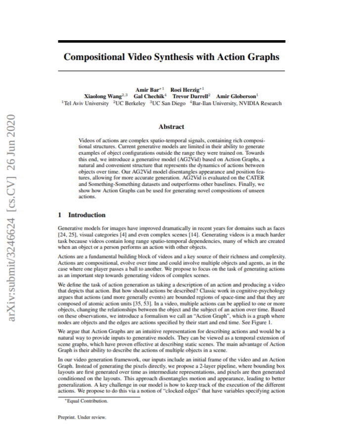

Compositional Video Synthesis with Action Graphs
|
1Tel-Aviv University 2UC Berkeley 3UC San Diego 4Bar-Ilan University, NVIDIA Research
|
Preprint. Under review.
*Equally contributed
Videos of actions are complex spatio-temporal signals, containing rich compositional structures.
Current generative models are limited in their ability to generate examples of object configurations outside the range
they were trained on.
Towards this end, we introduce a generative model (AG2Vid) based on Action Graphs, a natural and convenient structure
that represents the dynamics of actions between objects over time.
Our AG2Vid model disentangles appearance and position features, allowing for more accurate generation.
AG2Vid is evaluated on the CATER and Something-Something datasets and outperforms other baselines.
Finally, we show how Action Graphs can be used for generating novel compositions of unseen actions.

Our contributions are thus:
1) Introducing the formalism of Action Graphs (AG).
2) Proposing a new video synthesis task (AG2Vid) and presenting a new model for this task.
3) Demonstrating an approach for constructing new actions out of existing atomic actions.
Classic work in cognitive-psychology argues that actions (and more generally events) are bounded regions of space-time and are composed of atomic action units (Quin, 1985; Zacks and Tversky, 2001). In a video, multiple actions can be applied to one or more objects, changing the relationships between the object and the subject of an action over time. Based on these observations, we introduce a formalism we call an Action Graph, a graph where nodes are objects, and the edges are actions specified by their start and end time.
Action Graph is a natural and convenient structure representing the dynamics of actions between objects over time. To execute an Action Graph, each action (and its corresponding edge) is assigned with a "clock" which marks the progress of the action in a particular timestep.


Composing new unseen actions
Based on the existing actions, we can create new actions in test time. For example, we can use the actions "Slide" and "Pick Place" to create the new action "Swap".

Compositional action synthesis in Something-Something and CATER.

Qualitative examples for the generation of actions on the CATER dataset.
We use the AG2Vid model to generate videos of four standard actions
and two composed unseen actions (Swap and Huddle).

Qualitative examples for the generation of actions on the Something Something dataset.
We use our AG2Vid model to generate videos of eight standard actions
and two composed unseen actions (Right Up and Down Left).
Comparison to existing methods

Comparison of baselines methods. The top two rows are based on CATER videos,
while the bottom two rows are based on Something Something videos.
The OURS + FLOW model refers to our model without the S generator network (flows prediction only).
Paper
|  |
|
Amir Bar*, Roei Herzig*, Xiaolong Wang, Gal Chechik, Trevor Darrell, Amir Globerson
Compositional Video Synthesis with Action Graphs
Arxiv
Hosted on arXiv
*Equal contribution
|
Acknowledgements
This project has received funding from the European Research Council (ERC) under the European Unions
Horizon 2020 research and innovation programme (grant ERC HOLI 819080). Prof. Darrell's group was
supported in part by DoD, NSF, BAIR, and BDD. We would also like to thank Anna Rohrbach for valuable
feedback and comments on drafts, and Lior Bracha for running the MTurk experiments.
|